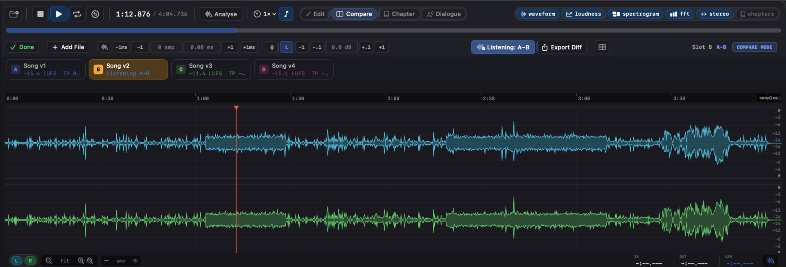
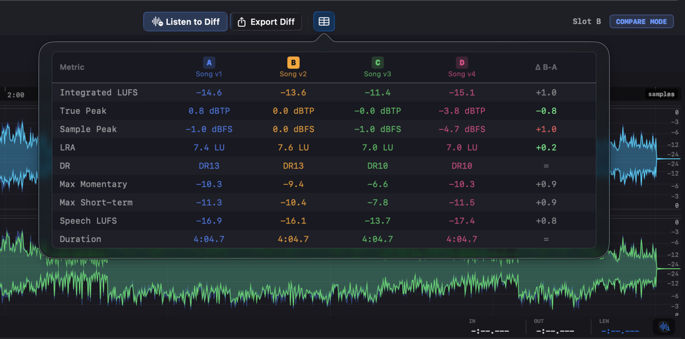
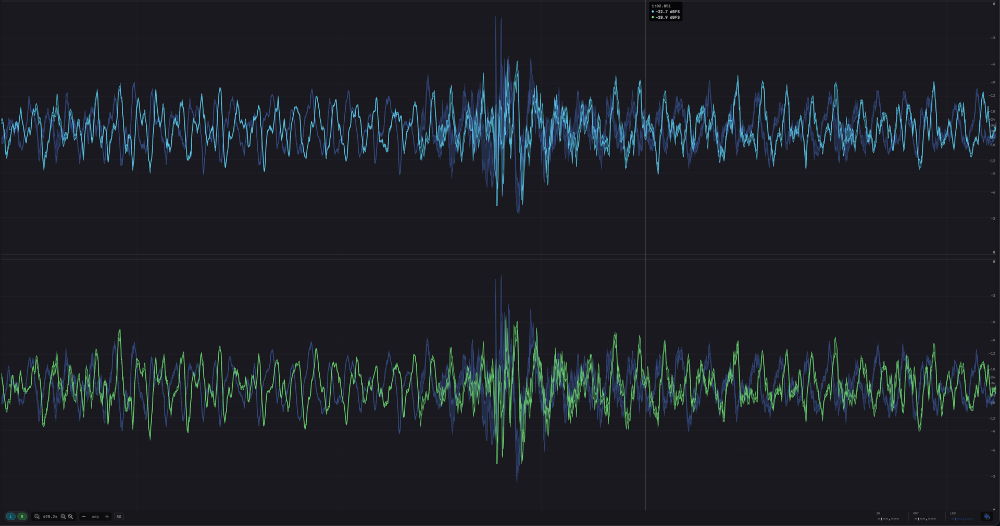

The louder version always sounds better, which is exactly why an A/B you can't level-match lies to you. Specula holds up to six versions side by side, level-matched by integrated LUFS and aligned to the sample. From there it computes the A−X residual: everything the two masters don't have in common, as its own waveform you can solo, scrub, and export.
macOSUp to 6 filesLUFS level-matchSample-accurate alignA−X residual
Up to six versions, side by side. Each slot carries its own loudness and true-peak read, with sample-accurate align and gain trim.
Why you can't trust the A/B
When you can't level-match precisely, you can't trust the comparison, and you definitely can't see what changed.
Half a dB louder reads as "better" to the ear, every time. So a raw A/B between rev 3 and rev 4 measures loudness bias, not the change you made. Until level is out of the equation, the comparison answers the wrong question. Specula normalises the versions by integrated LUFS first, so what you hear after that is the difference you actually introduced: the EQ move, the limiter change, the new master chain, not a level mismatch wearing its clothes.
Set up a fair A/B
Load the versions, take level and alignment out of the way, then listen to what's left.
1 · Drop in up to six versions
Load files as slots A through F, drag them onto the window, hit the + on the file dock, or drag a file straight onto the Compare toggle to add it in one gesture. Switch between any of them on bare 1 to 6 keys. Slot A is the reference everything else compares against; drag a slot chip to position A to promote it. Matching formats swap atomically (sub-millisecond); a different sample rate or channel count rebuilds the engine (~50 to 100 ms).
2 · Level-match by integrated LUFS
Each slot chip has an L toggle. Switch it on and Specula applies a gain offset that brings that slot's integrated LUFS to slot A's, so you hear two masters at the same loudness instead of the louder one always winning. Need a finer hand? The ±0.1 dB and ±1 dB buttons nudge slot gain by up to ±24 dB total, folded into the same atomic gain the audio render reads.
3 · Align to the sample
Hit auto-align on any non-A slot: Specula cross-correlates against slot A in two passes, a decimated pass to locate the offset coarsely and a full-rate pass to land on the exact sample, then applies it, as long as the takes start within about 5 seconds of each other in either direction. For the last sample, the ±1 sample and ±1 ms buttons time-shift the slot, and the offset and gain readouts are editable fields with ↺ reset buttons: type the value you want and hit Return. The current offset shows in samples next to the buttons.
4 · Listen to the difference
Listen to Diff is a per-slot toggle (or bare D) that swaps the active slot's playback for the cached A−X residual. One-key A/B between source and the difference. With level-match on, two correct masters of the same source net out to near-silence; anything above silence is what changed. Export the residual to WAV with ⌃⌘E and open it anywhere.
What it looks like

Listen to the difference. The A−X residual isolates what actually changed between two takes, with optional level-match.

Every number in one table. Compare loudness, peak, and range across all loaded versions at once.

Ghost overlay. Slot A sits behind the active version so level and timing differences read at a glance.
The residual is the answer
What changed becomes its own waveform. The diff slot is a virtual slot that plays back the A − X residual, the sample-by-sample subtraction of the active version from the reference. Once level and timing are matched, everything the two versions share cancels to silence, and what's left is the change itself. You route that residual through the same waveform, spectrogram, and export paths as any other slot, so you can see where in the file the difference lives and how loud it is, not just hear that something moved.
How the residual is made. Takes align to the sample and match by integrated LUFS before the subtraction, so only what changed survives it.
Polarity matters for the subtraction. Each slot has a ϕ toggle that flips polarity, useful for catching a wiring error, and for diff work where flipping one signal is what makes the residual sit closer to zero. The diff slot recomputes automatically (80 ms debounced) whenever nudge, gain, polarity, or level-match changes, so the residual always reflects your current alignment. It has no live measurement of its own, switching to a diff slot clears the live loudness and stereo displays, because the diff buffer plays pre-computed.
Or overlay instead of subtract. The Waveform A overlay toggle draws slot A's waveform as a ghost behind whichever slot is active, a direct visual A/B at the sample level without leaving the active version. And the Compare metrics popover puts every loaded slot side by side in one table: integrated LUFS, true peak, sample peak, LRA, DR, speech stats. Read the numbers and hear the residual, from the same comparison.
Settle the comparison
"Better or just louder?" has an answer you can play. Level-match the versions, align them, and the residual is the change itself, on screen as a waveform and in your monitors as audio. What the numbers claim and what you hear come from the same comparison.